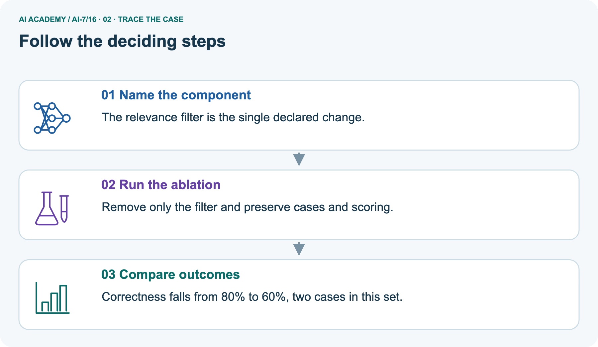
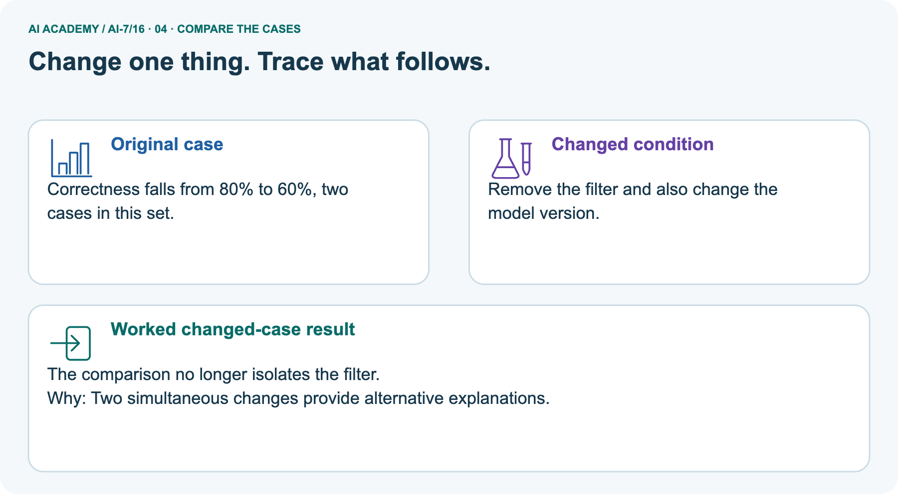
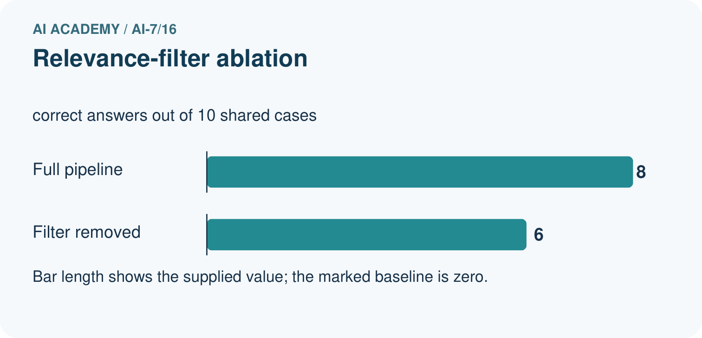
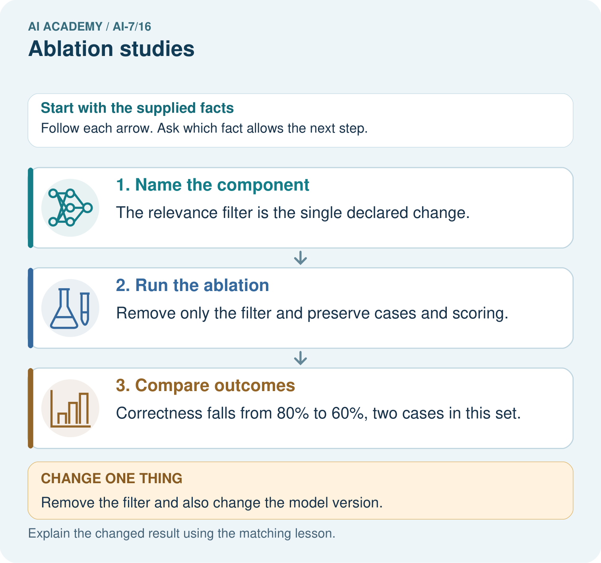
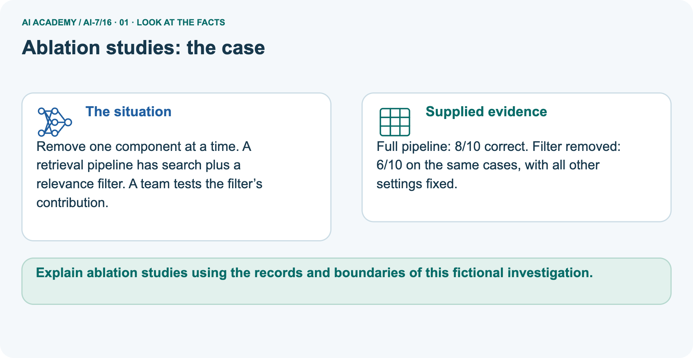
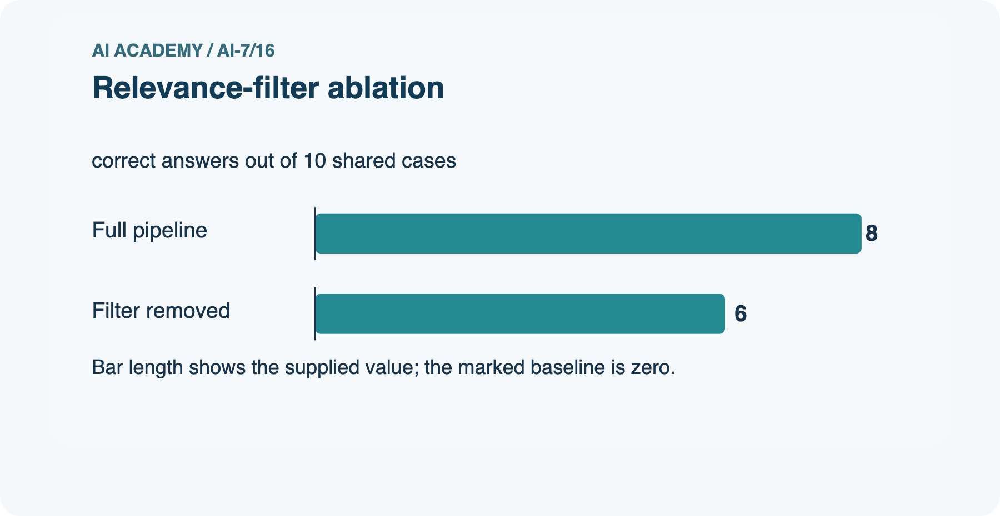
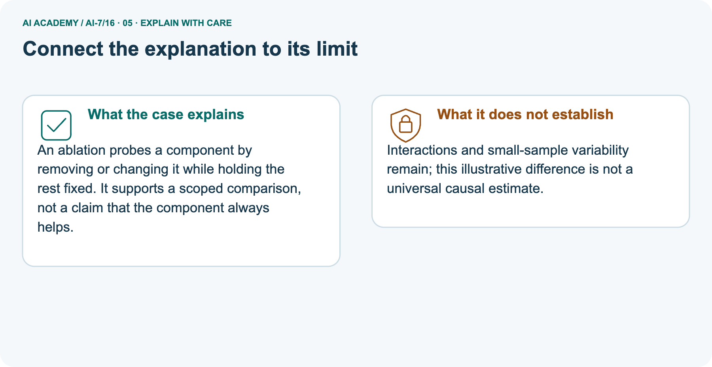
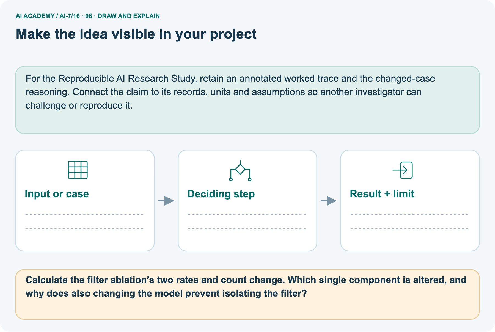

AI Academy · Level 7 · Grade 12 · Week 16 · Student lesson
Ablation studies
Learn to understand, design, build, test and explain AI systems responsibly.
Project: Reproducible AI Research Study
THE CONNECTED WEEK
Remove one component. Preserve the controls. Inspect the failures.
Explain conditional ablation differences, missing interactions and critical failure categories.
Keep one habit: Comparison contract → main condition ledger → native missing-cell grid → separate filter trace → interaction counterexamples → independent fifteen-case task.
Main lesson · Section 1
Remove one component and inspect what changes
A small score change can conceal a critical failure category.
Learning goals
I can explain the mechanism and terminology of ablation studies.
I can apply the stated procedure to a new case with a traceable result.
I can identify an assumption or limitation and design a revealing follow-up.
Retrieve controlled comparisons and practical-effect limits
Close your notes first. A rough first answer helps us choose the right starting point; it is not a score for your ability.
Without opening the old lesson, explain one key idea from Multiple comparisons. Give an example and a mistake that the idea helps you avoid.
Without opening the old lesson, explain one key idea from Effect size and practical importance. Give an example and a mistake that the idea helps you avoid.
Without opening the old lesson, explain one key idea from Confounders and controls. Give an example and a mistake that the idea helps you avoid.
After trying, check the relevant lesson or ask your teacher. Change the part of your explanation that the evidence shows was wrong.
Starting response
Recall Multiple comparisons. Explain why a recorded result needs its input conditions and evidence source before it can support a claim.
End goal
Explain ablation studies using the records and boundaries of this fictional investigation.
Earlier wording, alternatives and picture transcripts
Your learning target
Remember before reading
This week you will practise:
Explain the mechanism and terminology of ablation studies
Apply the stated procedure to a new case with a traceable result
Identify an assumption or limitation and design a revealing follow-up
Retrieve what you already know
This week’s end goal
Main lesson · Section 2
Define what is removed and what must stay fixed
Separate total performance, failure severity and interaction evidence.
Begin with a component question
To investigate a component, compare the complete system with a version that removes only that component. Use the same evaluation cases, scoring and remaining settings. The difference describes this removal in this configuration.
It does not assign a permanent score to the component: retrieval may be useful only when another component uses its results, and a validation step may protect an important boundary even when the total score barely changes.
Original ablation definition
Ablation removes a component to investigate its contribution under a controlled comparison. Interactions can make contributions depend on other components.
Complete controlled-comparison contract
| Comparison item | Complete constructed contract |
|---|---|
| Common evaluation | Same ten cases, same scoring and all other settings fixed |
| Full system | Retrieval and validation present; 8/10 passes |
| Remove retrieval only | Validation remains; 5/10 passes |
| Remove validation only | Retrieval remains; 7/10 passes; an unauthorized action is stipulated |
| Remove both | Not supplied; do not invent this outcome |
| Reported effects | Full minus ablated pass count and percentage-point difference |
| Case identities | Not supplied; net differences do not identify which cases flipped |
| Scope | Supplied fictional summaries, not actual model runs or population causal estimates |
Given and missing evidence
Earlier wording, alternatives and picture transcripts
Begin by writing the question the procedure is intended to answer. Identify the information already supplied, the information it will produce and the information still missing.
These are constructed classroom examples; they do not require live accounts, private records or an external service. Do not treat a plausible explanation as a measured outcome.
Main lesson · Section 3
Trace both removals without adding their effects
The missing joint-removal condition matters.
Original comparison procedure
Compare full system, without retrieval and without validation on identical cases and scoring. Hold other settings fixed; record changed failure categories, not just totals.
All supplied conditions and remaining unknowns
| Condition | Pass count/rate | Net drop from full | Interpretation |
|---|---|---|---|
| Full system | 8/10 = 80% | Reference | Both components present |
| Without retrieval | 5/10 = 50% | 3 passes; 30 percentage points | Conditional removal effect in this configuration |
| Without validation | 7/10 = 70% | 1 pass; 10 percentage points | Also permits a stipulated unauthorized action |
| Without both | Unknown | Unknown | Cannot calculate joint effect or interaction |
| Changed case identities | Unknown | Net count is not a flip ledger | Inspect per-case records if collected |
State controlled settings and explain the visual
Before applying the procedure, write its units, denominator or decision boundary where relevant. A partner should be able to repeat each step using the same inputs.
If a required input is absent or violates the stated contract, record that condition explicitly instead of quietly replacing it with a convenient value.
Point to the input, the deciding step and the result in this week’s visual. Explain the same step in ordinary words. A picture helps when you can say what each part represents.
Earlier wording, alternatives and picture transcripts
Ablation studies — evidence trace
Connect the picture and the explanation
Main lesson · Section 4
Predict why removing a filter and changing the model confounds attribution
The changed condition varies two factors at once.
Main task and response
Full system 8/10, without retrieval 5/10, without validation 7/10; the last permits an unauthorised action. Show the intermediate steps and give the conclusion with its scope.
Predict the changed picture condition
Change: Remove the filter and also change the model version.
Check after predicting
Prediction: The comparison no longer isolates the filter.
Reason: Two simultaneous changes provide alternative explanations.
Earlier wording, alternatives and picture transcripts
Compare a familiar case with a changed case
Change one thing in the pictured case
Main lesson · Section 6
Read the ablation grid and the separate filter example
Do not mix the main validation boundary with the separate filter counts.
Main supplied counts and checked result
Full system 8/10, without retrieval 5/10, without validation 7/10; the last permits an unauthorised action.
Drops 3 and 1 passes respectively in this sample. Validation's critical action boundary is not captured by pass-count magnitude alone.
Compare the intermediate evidence with the final statement. Explain why each number or decision follows from the stated inputs.
The conclusion belongs to this scenario and procedure; changing the inputs, evaluation population or authority can change what it establishes. Retain the raw record so a later revision can be compared honestly.
Separate filter facts and scope
Remove one component at a time. A retrieval pipeline has search plus a relevance filter. A team tests the filter’s contribution.
Full pipeline: 8/10 correct. Filter removed: 6/10 on the same cases, with all other settings fixed.
The main grid separates retrieval and validation. Its two observed net score drops are three and one passes, but their sum does not establish the result of removing both. The separate picture investigates a relevance filter instead: full pipeline 8/10 versus filter removed 6/10, a net drop of two passes or twenty percentage points.
The aggregate counts do not show whether exactly two cases changed; gains and losses could offset. If the model version also changes, the comparison cannot isolate the filter. Neither picture records a real model execution or proves a universal contribution.
See the missing joint-removal condition




Read the picture one step at a time
An ablation probes a component by removing or changing it while holding the rest fixed. It supports a scoped comparison, not a claim that the component always helps.
Complete filter arithmetic and interpretation
| Separate filter picture | Calculation or evidence limit |
|---|---|
| Full pipeline | 8/10 = 80% |
| Filter removed only | 6/10 = 60% |
| Net difference | 8 − 6 = 2 passes; 80% − 60% = 20 percentage points |
| Relative decrease from full | 2/8 = 25%; differs from 20 percentage points |
| Changed model as well | Two factors vary; filter-only attribution is lost |
| Which cases changed | Not supplied; net two is not proof of exactly two flips |
| General conclusion | Conditional descriptive comparison; no universal benefit or significance established |
Predict changing the model too
Change one thing: Remove the filter and also change the model version. Predict the result before checking the explanation. What remains the same?
Check after predicting



Explain remaining limits
Interactions and small-sample variability remain; this illustrative difference is not a universal causal estimate.
Read the labelled picture: Calculate the filter ablation’s two rates and count change. Which single component is altered, and why does also changing the model prevent isolating the filter?
Earlier wording, alternatives and picture transcripts
Learn from the worked case
Cover the result before checking it. Say what is given, choose the procedure, and follow one step at a time. Then uncover the result and explain your first mismatch. Ask why a step is allowed, not only what number it produces.
A pictorial worked case: Ablation studies
The facts we will use






Why this result follows
What this example does not establish
Main lesson · Section 7
Repair additive contributions and score-only judgments
Interactions and critical failures can matter more than a small aggregate change.
Original limitation and repair setup
Removing a component changes a complete procedure; attribution depends on the controlled design and possible interactions.
A useful check asks what would make the reasoning fail. Distinguish a failure to execute the declared procedure from a weakness in the procedure itself.
The first may require a correction; the second requires an explicitly revised method and new evidence. Preserve unsuccessful cases so an improved result cannot hide the original problem.
Missing-cell and severity probes
| Ablation audit | Checked interpretation |
|---|---|
| Removing validation drops only one pass | Do not dismiss the stipulated unauthorized action |
| Adding the two observed drops | Does not determine the unobserved joint removal |
| Both-removal count hypothetically 4 | Interaction contrast 8 − 7 − 5 + 4 = 0 |
| Both-removal count hypothetically 6 | Interaction contrast 8 − 7 − 5 + 6 = 2; also compatible with supplied three cells |
| Hypothetical counterexamples | Neither is an observed result; they demonstrate missing information |
| Net score falls by two | Per-case gains and losses may offset; exact flips unknown |
| Filter and model both change | Alternative explanations prevent filter-only attribution |
| All settings said to be fixed | An exercise assumption; actual study would need recorded settings and outputs |
Write a supported repair
A report omits this qualification: Removing a component changes a complete procedure; attribution depends on the controlled design and possible interactions.
Explain how omitting it could change a reader's interpretation, and write an accurate replacement.
Earlier wording, alternatives and picture transcripts
Locate the earliest unsupported step
Main lesson · Section 8
Practise tracing removal effects and naming missing evidence
Reserve the fifteen-case comparison for the first independent attempt.
Shared explanation
Explain the weekly mechanism in your own words. Use the worked scenario to name its input, decision rule and output.
Supported workbook trace
Use workbook W2 for the connected example “Ablation studies”. First fill the input and rule boxes. Try the middle steps before asking for a hint. After a hint, try the next step yourself.
| Plan | Do | Check |
|---|---|---|
| What is given? Which rule or procedure applies? | Record each intermediate step. | Does the result follow? What remains unknown? |
Explain your trace to a partner. Your partner points to one step to check. Swap roles on the next case. Each person writes their own explanation.
Individual check
Use the worked case for Ablation studies. Proposed explanation: “The worked result establishes every future case”. Decide whether this explanation is supported.
Point to the step or supplied fact that decides; explain your repair if needed.
Answer on your own before discussion. If you are unsure, say which step you need help with.
Picture response
Calculate the filter ablation’s two rates and count change. Which single component is altered, and why does also changing the model prevent isolating the filter?
Reserve the selected new case
This is supported practice. Keep the separately named independent case for an attempt before feedback.
Earlier wording, alternatives and picture transcripts
Practise with less help: Trace the worked case
Check your reasoning
Explain the picture
Main lesson · Section 9
Run a descriptive ablation audit without inventing missing runs
Use counterexamples to explain unknown interactions.
Current investigation
Full system 8/10, without retrieval 5/10, without validation 7/10; the last permits an unauthorised action. Show the intermediate steps and give the conclusion with its scope.
Complete executable arithmetic and counterexample
"""Descriptive ablation arithmetic on supplied summaries; no real AI actions."""
from fractions import Fraction
def ablation_drop(full, removed, total):
if any(type(x) is not int for x in (full,removed,total)) or total<=0 or not 0<=full<=total or not 0<=removed<=total:
raise ValueError('require integer counts within a positive common denominator')
return {'count_drop':full-removed,'percentage_point_drop':100*Fraction(full-removed,total)}
main_retrieval=ablation_drop(8,5,10)
main_validation=ablation_drop(8,7,10)
picture=ablation_drop(8,6,10)
assert main_retrieval['count_drop']==3 and main_validation['count_drop']==1
assert picture['percentage_point_drop']==20
# Two possible joint-removal outcomes, neither supplied by the actual exercise.
# Full R+V = 8; R only = 7; V only = 5. Neither component = unknown.
def interaction_contrast(neither):
if type(neither) is not int or not 0<=neither<=10:raise ValueError('invalid hypothetical count')
return 8-7-5+neither
assert interaction_contrast(4)==0 and interaction_contrast(6)==2
print('Main retrieval removal:',main_retrieval)
print('Main validation removal:',main_validation)
print('Separate filter picture:',picture)
print('Main no-validation condition also permits a stipulated unauthorized action; a one-pass drop does not make that boundary unimportant.')
print('Joint-removal outcome is UNKNOWN. Hypothetical neither counts 4 versus 6 give interaction contrasts 0 versus 2; these are counterexamples, not observations.')
print('Counts give net changes, not the identities of changed cases. No model, study, external action, significance test or universal causal attribution is performed.')
Predictions, results and limits
Predict the two main pass drops and percentage-point changes. Then inspect the complete descriptive audit. It computes supplied summary differences and shows two explicitly hypothetical joint-removal outcomes consistent with the three known cells. Their different interaction contrasts demonstrate why the missing cell cannot be inferred. The program does not simulate an unauthorized action or run a model.
Keep hypothetical values separate from observations, and preserve the independent fifteen-case totals for a first attempt.
Evidence record
| Record | Your evidence |
|---|---|
| Given input and fixed rule | |
| Prediction before checking | |
| Actual result, or “not run” | |
| First mismatch and one explanation | |
| Boundary or missing input and expected response |
On paper, trace the supplied procedure. If code is provided, predict before running it in a local practice file. Never write an expected answer as though it were an observed run.
Before trying: what do I expect, and why? While trying: which step could first go wrong? Afterwards: what did I actually observe, and what should change? Keep “not run” if you only traced the procedure.
Earlier wording, alternatives and picture transcripts
Predict, investigate and preserve the evidence
Plan → try → check
Main lesson · Section 14
Try alone: compare three conditions on fifteen cases
Compute both net drops and state why contributions are not universally additive.
Independent case
Full 12/15, without A 9/15, without B 11/15. Compute sample drops and state interaction limit.
First attempt and support record
Attempt this case before feedback. Record any help. Earlier examples below are further practice; a case already practised with feedback cannot establish fresh transfer.
Feedback after trying
Attempt the independent case before hints. Record whether you worked alone, used a hint or followed a model. After feedback, fix the first unsupported step and explain why it changed.
A later check uses a changed case, not a copied answer.
Earlier wording, alternatives and picture transcripts
Independent case: Apply a new case independently
Attempt this without hints
Full 12/15, without A 9/15, without B 11/15. Compute sample drops and state interaction limit.
Record support used: none, hint or teacher explanation. After feedback, a different case is needed to demonstrate independence.
Use feedback to improve
Main lesson · Section 11
Save each condition, failure category and unchanged setting
Include missing conditions rather than silently assuming their outcomes.
Project and artifact
Add a labelled ablation studies evidence sheet to Reproducible AI Research Study. Show how you can explain the mechanism and terminology of ablation studies.
Use the supplied fictional case and keep its inputs, intermediate steps, calculation or prediction, and limitation. Connect this record to last week’s record; a matching answer without a trace is insufficient.
| Project evidence | Record |
|---|---|
| Component and version | |
| Inputs permitted at prediction time | |
| Trace and comparison with earlier work | |
| Failure, limit and human review |
Actual local arithmetic or paper trace
For the Reproducible AI Research Study, retain an annotated worked trace and the changed-case reasoning. Connect the claim to its records, units and assumptions so another investigator can challenge or reproduce it.
Earlier wording, alternatives and picture transcripts
Evidence for your project
Main lesson · Section 16
Explain a conditional removal effect and a missing interaction
Counts, controls and failure severity belong in the same explanation.
Retrieve and explain
Close your notes. Explain this goal in your own words: Explain the mechanism and terminology of ablation studies
Plan a changed-case return
If you are unsure, return to the worked picture and explain one arrow. If you are ready, change an input or assumption and justify your prediction.
Save your workbook evidence. At the next review, try a different case before opening your old answer.
Reference bank and extra practice
Choose the reference that helps your next step.
Reference · Use research vocabulary precisely
Reference · Section 5
Reference · Use research vocabulary precisely
Connect each term to the question, comparison, measurement or evidence.
Vocabulary and your explanation
| Word | Meaning |
|---|---|
| Ablation | Removing or disabling a component in a comparison |
| Conditional contribution | An effect given the other components |
| Interaction | An effect depending on another factor's setting |
Extra challenge · Explain a stronger case
Reference · Section 10
Extra challenge · Explain a stronger case
Choose the next challenge after the main route.
Explain,repair and extend
Explain the weekly mechanism in your own words. Use the worked scenario to name its input, decision rule and output.
A report omits this qualification: Removing a component changes a complete procedure; attribution depends on the controlled design and possible interactions.
Explain how omitting it could change a reader's interpretation, and write an accurate replacement.
For the worked scenario, propose one additional case that could reveal a failure, describe its expected outcome before running it, and explain what would need to remain fixed for a fair comparison.
Do not reuse W4 as a new final test after receiving feedback.
Explain → apply → challenge
Reference · Check the research reasoning and its limits
Reference · Section 12
Reference · Check the research reasoning and its limits
Use after practice; reserve the selected independent case for its first attempt.
Current explanation and response
Complete the supported workbook tasks before attempting W4 independently. Record any hints or help used. After feedback, use the teacher's fresh retry rather than copying the earlier answer.
For a project, select a relevant new case, predict the outcome from the declared rule and preserve the result alongside any revision.
For the worked scenario, propose one additional case that could reveal a failure, describe its expected outcome before running it, and explain what would need to remain fixed for a fair comparison.
Do not reuse W4 as a new final test after receiving feedback.
Extra practice · Revisit the complete trace
Reference · Section 13
Extra practice · Revisit the complete trace
Predict before reading the supplied steps.
Complete trace and evidence
Complete evidence record
Ablation studies — evidence trace
Follow the input through the stated procedure to its result. Cover the result first, predict it, then explain every intermediate step. The text/table accompanies the figure so the example can be read without colour.
Reference · The earlier route checklist
Reference · Section 15
Reference · The earlier route checklist
Use one main route rather than repeating the lesson.
Targets,route and first prediction
Start with this question: Remove one component at a time. A retrieval pipeline has search plus a relevance filter. A team tests the filter’s contribution.
| By the end, I can | How I will show it |
|---|---|
| Explain the mechanism and terminology of ablation studies | Explain the deciding step, show a trace or test, and state one limit. |
| Apply the stated procedure to a new case with a traceable result | Explain the deciding step, show a trace or test, and state one limit. |
| Identify an assumption or limitation and design a revealing follow-up | Explain the deciding step, show a trace or test, and state one limit. |
Remember → watch and explain → try with help → investigate → try independently → keep project evidence. Your teacher may spread this lesson across several classes.
Keep your first prediction. Compare it with what the evidence shows and explain any change.
Extra practice · Predict,check and repair
Reference · Section 17
Extra practice · Predict,check and repair
Keep supported feedback separate from the independent case.
First supported question and optional hint
Remove one component at a time. A retrieval pipeline has search plus a relevance filter. A team tests the filter’s contribution.
Which labelled step matches this detail? Correctness falls from 80% to 60%, two cases in this set.
1. Name the component
2. Run the ablation
3. Compare outcomes
Hint if needed: Read the steps in the pictorial case. Match the supplied detail to the stage that performs or records it.
Practice 1: explain the deciding evidence
Check after the first attempt
After your attempt, compare with the supported explanation: Compare outcomes Correctness falls from 80% to 60%, two cases in this set. An ablation probes a component by removing or changing it while holding the rest fixed.
It supports a scoped comparison, not a claim that the component always helps.
Changed-case question and optional hint
Changed-case practice: Remove the filter and also change the model version. Which conclusion is supported by the supplied facts?
1. The comparison no longer isolates the filter.
2. This one example guarantees correct results for every future input.
3. We can decide the result without examining the changed input or the procedure.
Hint if needed: Use the changed condition and the deciding step in the pictorial trace. The answer must say what follows from those facts.
Practice 2: explain the deciding evidence
Check after the changed attempt
After your attempt, compare with the supported explanation: The comparison no longer isolates the filter. Two simultaneous changes provide alternative explanations.
Repair and retain the record
Review Multiple comparisons (ai-7/15). Goal: Explain the mechanism and terminology of multiple comparisons. Short practice: Calculate the six-test cutoff and identify which supplied p-values reject.
Why must the team count every planned comparison rather than report only its smallest p-value?. Return to this week and explain what you changed.
Review Effect size and practical importance (ai-7/13). Goal: Explain the mechanism and terminology of effect size and practical importance. Short practice: Calculate the absolute error-rate reduction from 20/1000 to 15/1000.
Does it meet the ten-fewer-errors threshold, and what changes when B has eight errors?. Return to this week and explain what you changed.
Review Confounders and controls (ai-7/10). Goal: Explain the mechanism and terminology of confounders and controls. Short practice: Draw the four condition/background combinations.
Which variables were coupled before, and why would collecting only healthy-white and spotted-blue again leave the confounding unresolved?. Return to this week and explain what you changed.
Use Download completed work in the hosted lesson to export your answers, reflections, practice feedback and code-run evidence. Open the HTML copy to read or print it.
Drafts stay in this browser when storage is available; clear drafts on a shared device.
Earlier wording, alternatives and picture transcripts
Use this supported practice once, in the browser or on paper. Keep the reserved independent assessment for a separate first attempt before teacher feedback.
Repair a missing building block
Keep your completed work
Reference · Six-picture concept journey
Reference · Section 18
Reference · Six-picture concept journey
Choose the picture that supports the current explanation.
01. Ablation studies: the case



Remove one component at a time. A retrieval pipeline has search plus a relevance filter. A team tests the filter’s contribution. Supplied facts: Full pipeline: 8/10 correct.
Filter removed: 6/10 on the same cases, with all other settings fixed.
Point to the given fact that matters most. Explain why it matters.
02. Follow the deciding steps
Name the component: The relevance filter is the single declared change. → Run the ablation: Remove only the filter and preserve cases and scoring. → Compare outcomes: Correctness falls from 80% to 60%, two cases in this set.
Point to each numbered stage and explain which recorded input it uses.
03. Relevance-filter ablation



Relevance-filter ablation. Units: correct answers out of 10 shared cases. Full pipeline: 8. Filter removed: 6.
Read the labels and values. Explain the relationship the model shows.
04. Change one thing. Trace what follows.
Original case: Correctness falls from 80% to 60%, two cases in this set. Changed condition: Remove the filter and also change the model version. Expected result: The comparison no longer isolates the filter.
Reason: Two simultaneous changes provide alternative explanations.
Predict before checking the worked changed-case result. Name what changed and what the supplied facts allow you to conclude.
05. Connect the explanation to its limit



An ablation probes a component by removing or changing it while holding the rest fixed. It supports a scoped comparison, not a claim that the component always helps.
Limit: Interactions and small-sample variability remain; this illustrative difference is not a universal causal estimate.
Explain the case, then point to a limit on the claim.
06. Make the idea visible in your project



For the Reproducible AI Research Study, retain an annotated worked trace and the changed-case reasoning. Connect the claim to its records, units and assumptions so another investigator can challenge or reproduce it.
Draw your input, deciding step, result and limit. Supported question: Calculate the filter ablation’s two rates and count change.
Which single component is altered, and why does also changing the model prevent isolating the filter?
Draw your project trace and justify the deciding step using evidence.